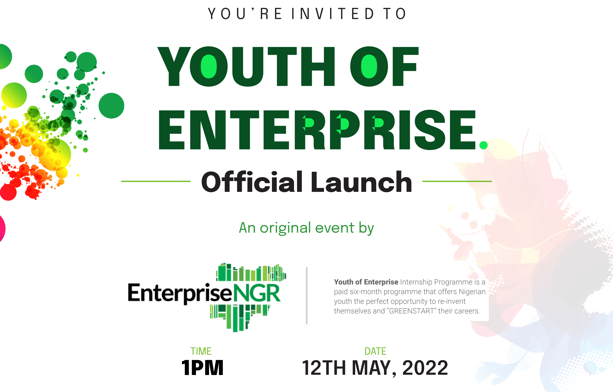

To position Nigeria as a leading financial centre in Africa and the
world.
"We aim to advance this agenda by actively collaborating with our
members, industry partners, policymakers, regulators and other
stakeholders."
Our pursuit of recognizable success in all these areas will be
supported by strong and reliable research and data insights – all
aimed at supporting the growth of the Nigerian FPS sector and
positioning it as a leading financial centre in Africa and the
world.
Financial Inclusion.
Digitization.
International Trade and Investment.
Regionalization.
Sustainability.
We aim to advance this agenda by actively collaborating with our
members, industry partners, government regulators, and stakeholders.
Our pursuit of recognizable success in all these areas will be
supported by strong and reliable research and data insights – all
aimed at supporting the growth of the Nigerian FPS sector and
positioning it as a leading financial centre in Africa and the
world.
A breakdown of our key focus areas
1.
Financial Inclusion
Advocate for inclusive access to appropriate, affordable, and timely
financial products and services, some of which include banking,
loan, equity insurance products, etc.
2.
Digitization
Advocating for increased innovation and adoption of technology
across various sub-sectors of the Nigerian Financial and
Professional Services (FPS) sector.
3.
International Trade & Investment
Promote Nigeria as a major destination for international trade and
investment and enable easy transactions.
4.
Regionalization
Facilitate the expansion of Nigerian FPS operators across the
continent and position Nigeria to tap the benefits of the African
Continental Free Trade Area.
5.
Sustainability
Encourage the sector to integrate environmental, social, and
governance (ESG) principles into their operations and investment
philosophies
Membership
Join our network of members at the forefront of advancing the
development and transformation of Nigeria.
How We Work
Our Pathways to Impact
1.
Partnership
We build strong partnerships with key stakeholders in the private
and public sectors, locally and internationally, to achieve our
objectives across our priority areas.
2.
Research & Policy
We establish thought leadership and drive policy engagement,
programmes and initiatives through evidence-based research and data
insights.
3.
Advocacy
We ensure regular stakeholder engagement, organize and participate
in key sector events towards the transformation of the FPS sector.
4.
Intervention
EnterpriseNGR directly intervenes in key sectors of the economy
through the coordination of joint investments in proprietary
initiatives to drive the change we are advocating for.
5.
Talent
One of the critical success factors for the development of the
Nigerian FPS sector is the quality of the talent within, hence
attracting and nurturing top talent is crucial. Our first initiative
in line with this is the ‘Youth Of Enterprise’ Internship Programme
(YOE) – an initiative that aims to build a strong pipeline of
entry-level talent through the recruitment and upskilling of 5,000
interns annually and subsequently growing that number to 100,000 in
the next 10 years.
6.
Standards
We advocate for the proactive adoption of the highest standards in
the FPS sector in line with global best practices.
KEEP UP TO DATE
Latest News
The latest news from EnterpriseNGR and the financial services sector.
April 12, 2022
From the CEO’s Desk

April 12, 2022
Youth of Enterprise (YOE) Internship Programme Launch